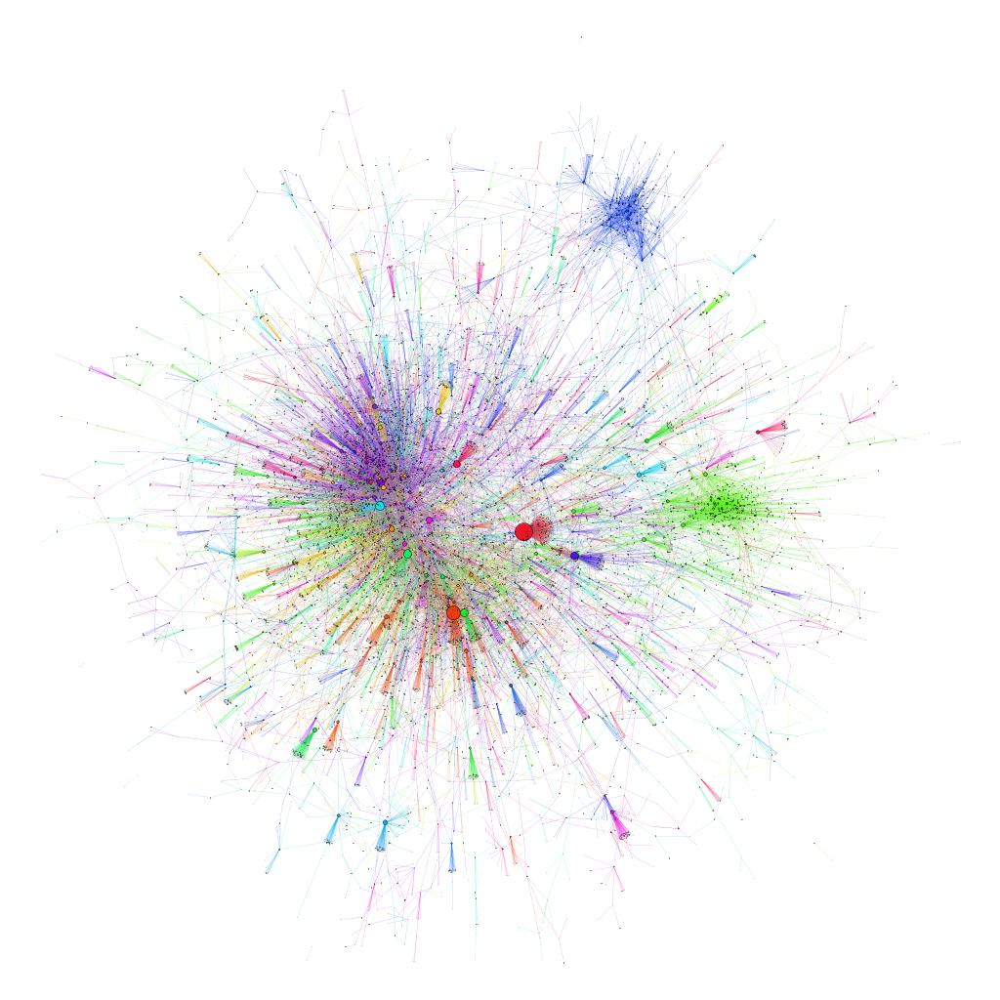

About Me
I am a senior at Amherst College, interested in network analysis, economic modelling, environmental policy, and programming. This page showcases my most recent work.
List of Projects
Planning for Majors: Automatic Visualization of Prerequisites Networks at the Five Colleges and Bates
I scraped the Five College course catalog for Hack Hamp to create interactive maps of which courses are required by which others. You can find the maps here.
As a senior who has completed both my majors, I was inspired to start this project as a Christmas present for my brother, who is navigating Bates College (check out these visualizations here). I hope the visualizations showcased below will be useful to those at my alma mater as well.
Links to departmental maps at Amherst College
Click and drag to pan, scroll to zoom, and click on course nodes to view their descriptions, their neighbors, and links to their most recent course description pages.
Please report any bugs on my Github repo. This project was done in Python using igraph to generate the layouts, then passing them as json files to the Oxford Internet Institute's excellent network visualization template.
Patent Litigation Visualizations
Patents have been among the dominant forms of intellectual property internationally since the signing of the Patent Cooperation Treaty in 1970. For a patent to be 'valid,' a device or technique must be novel, useful, and nonobvious. In theory, patents provide an incentive to innovate by giving the patent holder a monopoly over the technology for a limited time (20 years after the filing of the patent application in the US). However, it is difficult to verify if a patent is valid. As a result, the patent system is notoriously inefficient, with an enormous backlog and numerous issuances of invalid patents. This means groups of patent holders find themselves holding patents with overlapping claims that may or may not be valid. In some cases, the patent holders behave and compete within the market. Other times, they assert their patents against each other, preventing products from coming to market altogether. If too many entities hold overlapping patent rights to set of foundational technologies, it becomes nearly impossible to negotiate licenses to build those technologies. This is called a patent thicket.
My senior project involved researching possible patent thickets in renewable energy technologies. I did this by using community detection in the network of patent citations to find groups of highly related patents and looking at the fragmentation of these communities. I also made a network of citations between corporate patent portfolios and looked for large, densely interrelated groups of companies (check out my formal work here). However, niether of those metrics proves the existence of a patent thicket. My most credible proof of the existence of patent thickets is based on a network of lawsuits.
I did a more general search for patent thickets by scraping all the US patent litigation from 1980 to the present at dockets.justia.com, which is allowed under their robots.txt. I coded each lawsuit as a link in a network, known as an "edge" in graph theory, and each entity as a node in that network. Then, I looked for groups that traded lawsuits among themselves mor than others. These groups are more likely to own sets of overlapping patents, and so constitute patent thickets. To do this, I used the modularity-class community detection algorithm. The result is the image below.

Above, only the giant weakly connected component is shown: you can get to any of the entities traveling backwards or forwards along lawsuits. Litigating entities are closer if they sue each other more based on the Yifan Hu force-directed graph layout algorithm. Litigating entities are larger based on the number of times they sued or were sued. Each 'community' of litigants is colored differently. There are three main groups of litigants: the central ball with its dark purple nucleus (computers and technology), and the green blob and the blue lump (both pharmaceuticals and chemicals). There are several nodes with plumes billowing outwards: these are 'patent trolls' that over-aggressively sue many others for profit, rather than by pure necessity. To explore the structure of the groups of litigants, I used Gephi's Sigma.js exporter plugin to make interactive maps of who sued whom.
In both, drag to pan, scroll to zoom, and click on a node to view its name, neighborhood, and network statistics. Node size is proportional to the number of lawsuits related to an entity, and the warmth of a node's color is related to the fraction of a node's neighbors that sue each other
While I originally used Kimono to build a scraper, I recently rewrote it in pure python, available here. The scraper produces a TSV edgelist, which is to be run through Gephi, an open-source network analysis program, to do the rest.
Visualizing the Network of Correspondence in Les Liaisons dangereuses
Les Liaisons dangereuses is an epistolatory novel: it is composed entirely of letters between its main characters. Thus, the letters between them trace the evolution of their relations, and what the reader knows of the characters' relations. I wrote a python script to scrape an ordered list of senders and recipients from Les Liaisons dangereuses on wikisource, and then used the NDTV package in R to visualize how the dangerous relations evolve.
You can view the interactive video here . Each node is a character and each arrow represents that one character has sent a letter to the other. The first number of the time at the bottom of the screen is the letter number, which you can use to look up what is going on.
Without revealing the plot, this visualization reveals a structure that is central to the plot of Les Liaisons dangereuses and the lesson it was meant to convey: Cecile is the furthest away from her mother.
You can view my code at SKalt/LiaisonsViz